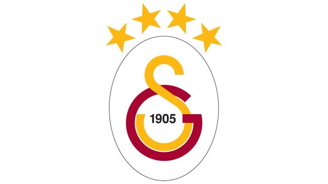
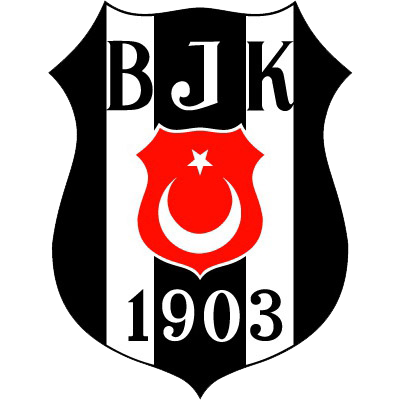
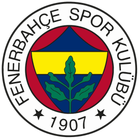

o Futebol é um paixão mundial, mas existem locais em que esta paixão é ainda mais forte e Istambul com certeza é uma delas.
Galatasaray, Beşiktaş e Fenerbahçe são os clubes mais vitoriosos da Turquia e protagonizam uma das maiores rivalidades do Futebol mundial. Te convido a saber mais sobre esses clubes que fazem a cidade de Istambul tremer toda vez que se encontram.
Galatasaray

o Galatasaray foi fundado no dia 14 de outubro de 1905, seus fundadores não sabiam que este viria a ser o clube mais popular e vitorioso do país. O clube conquistou o seu primeiro de 24 titulos do campeonato turco na temporada 1961/1962. apenas um ano após conquistar o primeiro titulo nacional, o Galatasaray também conquistou a sua primeira copa da Turquia, o clube venceu essa competição outras 17 vezes. além de tantas glórias nacionais, o Galatasaray tem um titulo muito especial em meio á suas 66 conquistas oficiais, trata-se da Copa da UEFA conquistada na temporada 1999/00, o clube venceu o Arsenal na grande final e conquistou a maior glória continental da sua história.
Beşiktaş

o Beşiktaş foi fundado em 1903, mas não como um clube de Futebol e sim de Ginástica. Seu primeiro time de Futebol veio a ser formado em 1911 e desde então carrega o orgulho de ter uma das torcidas mais engajadas e apaixonadas do mundo. O clube adotou as cores preto e branco por conta das dificuldades financeiras: sem dinheiro para pensar em uniformes modernos, o preto e o branco seriam os mais facéis e mais baratos de se fabricar. muito por causa dessas cores, em 1941 surge um dos apelidos mais belos do Futebol europeu: os ÁGUIAS NEGRAS.
O Beşiktaş é o time do povo, o mais querido pela população menos favorecida, é um clube que transborda tradição e história. O clube conta com 16 titulos turcos e 11 copas nacionais
Fenerbahçe

Fundado em 1907, o Fenerbahçe é um dos maiores campeões do campeonato turco com 19 titulos. uma grande curiosidade sobre o gigante turco é que seu estádio situa-se na parte asiática de Istambul. As primeiras cores do clube eram branco e amarelo: cor das flores de narciso que florescem por toda peninsula de Fenerbahçe. as cores mudaram em 1914, quando foram trocadas pelo amarelo e azul escuro. Além dos 19 campeonatos turcos, o clube possui 7 copas da Turquia. contando com outros torneios nacionais, o clube tem 54 titulos oficiais. O Fenerbahçe é um verdadeiro gigante que arrasta multidões por onde passa.